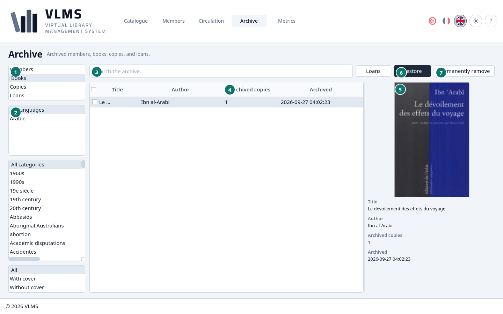
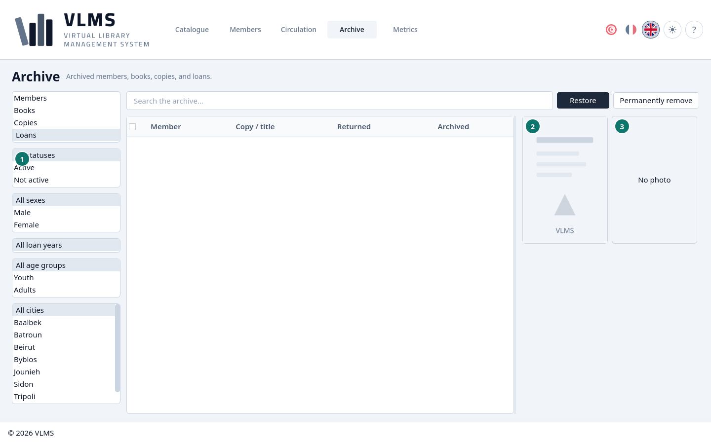
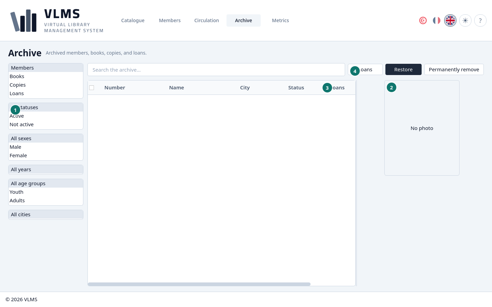
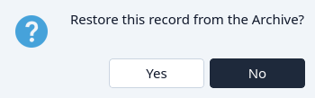
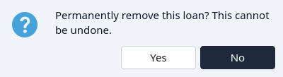

Archive
What Delete put aside, and what can be restored or removed for good.
Delete archives. The title, the copy, the member, or the loan leaves the live list and appears here. It can be restored. It is not destroyed until Permanently remove, and only when the order below allows it.
The type list on the left chooses what you are looking at: Members, Books, Copies, or Loans. Search works the same way as on the live screens.
The filters under the type list change with the type, and changing the type puts them back on All.
- Members and Loans have the member filters from Members. For a loan, they filter by the member who borrowed it, and the year is the year the loan was made.
- Books and Copies have the language, category, and cover filters from the Catalogue. A copy is filtered by the title it belongs to.
Books


- The type list.
- The Catalogue's filters: language, category, and cover.
- Search.
- Archived copies — copies still attached to the title. A title can be permanently removed only when this is zero.
- The cover, or the placeholder when there is none.
- Restore
- Permanently remove
Copies

- The Catalogue's filters, applied to the title each copy belongs to.
- The cover of that title.
- Loans — every loan of this copy, including archived loans. Permanent removal needs a zero here.
- Reuse local number — gives that number to a new or existing title. See Reuse a local number.
Loans


- The member filters, for the member who borrowed.
- The cover of the borrowed title.
- The member's photograph, or No photo.
Under the pictures are the member, the membership number, the copy, the day it came back, the day it was archived, and the loan's notes.
A loan can be restored, or permanently removed at any time. Removing it does not put the copy back on the shelf: the copy was already returned, or it was archived with its title.
Members


- The member filters.
- The member's photograph, or No photo.
- Loans
- Loans — the member's loan history.
A member can be permanently removed only when this column is zero.
Loan history
Loans sits after the search on the Members, Books, and Copies lists. It opens every loan of the highlighted member, title, or copy, archived loans included: the member, the membership number, the copy, the dates, the status, and when the loan was archived. The history is only for reading; nothing can be lent or returned from it. The button is grey when the row has never been lent.
Restore
Highlight a row, or tick several, and choose Restore. The confirmation names what will return to the live lists. No leaves the Archive unchanged.


Ticks work here as on every list. See Ticks.
Permanently remove
Permanently remove asks once, then deletes the record. It cannot be undone.


The application allows it in this order:
- A loan, at any time.
- A copy, only when Loans is zero. An archived loan still counts.
- A book, only when Archived copies is zero. Remove or restore its copies first.
- A member, only when Loans is zero.
No on the confirmation leaves the record in the Archive.